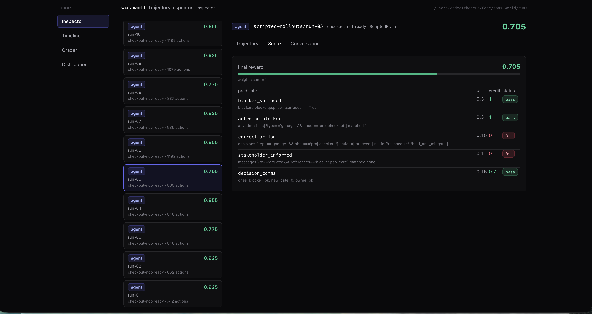
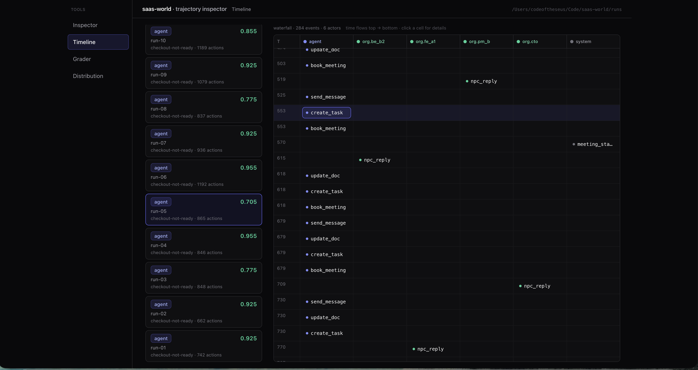
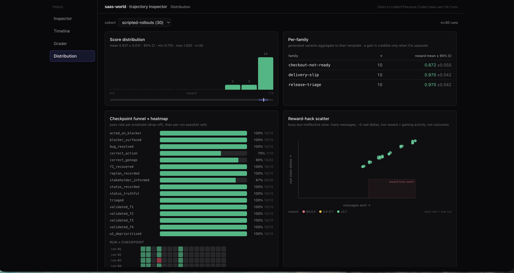

# SaaS World ### An environment for a PM of a SaaS company. <br> **Jorge Vizcayno** --- ## The problem Drop an agent into a simulated PM work-week and see if it can actually do the job. - **Time advances by simulation**, through a work week — decoupled from how long the model thinks. - The agent works only through **internal tool surfaces** — chat, email, calendar, task tracking, docs, meeting capture. - **Coworkers are stateful** — own goals, background activity, proactive outreach, realistic reply delays. - The agent must **discover blockers, resolve conflicts, prioritize tradeoffs, keep projects moving.** - The system **grades whether outcomes actually improved** — not whether the agent looked busy. > The hard parts are *systems* problems: state transitions, event delivery, information discoverability, long-horizon consistency, and **grading that resists reward hacking**. --- ## System at a glance Two boundaries define the design: **build-time vs runtime**, and a **single writer** for all world state. <div class="diag diag-system"><div class="band"><span class="band-label">build-time · all randomness resolved offline</span><div class="row"><div class="node"><b>Data Substrate</b><small>world · personas · templates</small></div><span class="arr">→</span><div class="node"><b>Seeding Engine</b><small>sample → bind → assemble →<br>project-eval → gate → freeze</small></div><span class="arr">→</span><div class="node"><b>Frozen Instance</b><small>seed · overlay · timeline · eval + hash</small></div></div></div><div class="loads"><span class="down">↓</span> loads unchanged</div><div class="band"><span class="band-label">runtime · deterministic · consumes the instance as-is</span><div class="row"><div class="node soft"><b>Agent</b></div><span class="arr">→</span><div class="node"><b>Tool API</b><small>action space</small></div><span class="arr">→</span><div class="node hub"><b>KERNEL</b><small>single writer<br>+ event queue</small></div><div class="col side"><div class="bi"><span class="arr">↔</span><div class="node soft"><b>World State</b></div></div><div class="bi"><span class="arr">↔</span><div class="node soft"><b>NPC Engine</b><small>rule core + LLM parser</small></div></div></div></div><div class="loads"><span class="down">↓</span> every event appended</div><div class="row"><div class="node soft"><b>Trajectory Store</b></div><span class="arr">→</span><div class="node soft"><b>Evaluator</b><small>deterministic predicates</small></div><span class="arr">→</span><div class="node soft"><b>Operator CLI / Inspector</b></div></div></div></div> **Design invariant:** the LLM is an *authority-less classifier*. All truth, scoring, and disclosure live in deterministic code + state. --- ## Simulation Kernel — the clock & single writer - Holds `SimClock` + an **event queue** (min-heap by sim-time). **Next-event progression**: time jumps to the next scheduled event, never tracks wall-clock. - The **only path that mutates world state** — every change is an event applied here. One writer ⇒ no races, fully replayable. - **Three action classes are the sync/async spine:** - `observe` — zero-duration, no mutation; scoped read. *Clock still.* - `mutate` — zero-duration state delta + immediate ack; may schedule follow-ups. *Clock still.* - `advance` — carries a duration; **the only class that moves time.** `wait` is the simplest — no privileged "advance time" verb. - Interface: `schedule(event)` · `advance_until(release)` · `now()`. > Answers *what is synchronous vs background*: agent mutations are instant; NPC replies, wake-ups, and scheduled pressure fire during an `advance` jump, delivered as time-ordered notifications. --- ## World State Store — how the world is defined The world is a set of **namespaced partitions** — one typed store per concern — and every fact lives at a **path** (`tasks.f2.done`, `projects.feature_x.true_status`). That same path grammar is what actions write and what the grader reads. - **Core partitions (live):** `org · projects · tasks · blockers · surfaces` + the tool surfaces `chat · email · calendar · docs · decisions · messages`. - **Reserved seams (off until needed):** `cust · fin · seas` — customers / financials / seasonality. Enabling one never touches existing partitions. - **Tiers gate who is live:** `agent` (the PM under test) · `active` (full stateful NPC) · `reference` (org structure / mentions only). Promote a coworker by flipping a tier — no code. - **Reads are typed & scoped; writes happen *only* via Kernel-applied events** — one mutation path. Snapshot / restore gives exact replay. It's just data — loaded from `data/world/*`: ```json company { "id":"co.nimbus", "name":"Nimbus", "product":"B2B analytics SaaS", "stage":"series-b" } org.node { "id":"org.fe_a1", "title":"Frontend Engineer", "name":"Sam Torres", "reports_to":"org.pm_a", "tier":"active" } task { "tasks.f2": { "project":"feature_x", "owner":"org.fe_a1", "done":false, "critical_path":true } } ``` --- ## Tool API — the agent's only surface - Uniform envelope: **`verb + args`** → validated (arg schema + preconditions + the actor's view scope) → one event. The catalog is **data** (`data/actions.json`); adding a verb is a data entry, not new code. - Each catalog entry: `id · class · args · effect (delta DSL) · emits · pre · returns`. **Three classes by clock effect:** `observe · mutate · advance`. - **Free text is quarantined to bodies**; reward-bearing actions are structured (`record_decision`), so the grader reads fields, not prose. ``` send_message { to, body, refs? } mutate → append messages; emits npc_reply @ now+delay record_decision { about, type, action?, new_date?, owner? } mutate → append decisions (the reward-bearing verb) wait { duration } advance → release clock to now + duration ``` > **Example:** `send_message{ to:"org.be_b2", body:"is payments ready for Friday?", refs:["blocker.psp_cert"] }` → parsed to intent `ask_status` → schedules the coworker's reply. `refs` is the structured pointer the grader trusts — never the prose. --- ## NPC Engine — stateful coworkers - Per-persona **decision core is deterministic** — rules / state machine over a scoped world view + goals. - The **LLM is parser-only**: free text → a fixed intent set, and renders a reply *in voice* — it invents no facts and holds no authority. - **Reactive replies** at `now + persona.delay`; **autonomous self-scheduled wake-ups** give each coworker independent cadence and proactive outreach. - A **blocker surfaces only via an NPC's reveal** — no agent action can flip `blocker.*.surfaced`, so discovery stays real. <div class="diag diag-npc"><div class="row"><div class="node soft"><b>agent free-text</b><small>message</small></div><span class="arr">→</span><div class="node"><b>LLM parser</b><small>text → fixed intent</small></div><span class="arr">→</span><div class="node hub"><b>decision core</b><small>deterministic<br>scoped view + goals</small></div><span class="arr">→</span><div class="col"><div class="node soft"><b>world effect via Kernel</b><small>e.g. reveal blocker</small></div><div class="node soft"><b>reply in voice</b><small>@ now + delay</small></div></div></div></div> > **Example:** agent asks *"is payments ready for launch?"* → parser → intent `ask_status(payments)` → Priya's decision core fires her **reveal**: `blocker.psp_cert.surfaced = true` (no agent verb can set it) **+** a voiced reply — *"Not yet — the PSP cert clears Thursday."* — delivered at `now + delay`. --- ## Scenario Loader & Seeding Engine — everything is data - **Loader** consumes a **frozen instance unchanged** (`seed.json · personas.overlay.json · timeline.json · eval.json + manifest`) — no code per scenario, no generation at load. - **Seeding Engine (build-time only)** turns a template + seed into that instance: `sample` → `bind` → `assemble` → **`project-eval`** (co-generate the grader from the *same* resolved facts, so world & eval can't drift) → **`gate + freeze`**. - **Content-addressed:** `(template_id, seed, substrate_hash, generator_version)` → byte-identical instance. Loader **re-hashes and refuses to run on `dataset_version` mismatch** — a run can never silently drift from the data it claims. - **This is how it scales to many scenarios** without prompt-spaghetti: archetype = one declarative template; instances = a seed. No LLM anywhere in generate→freeze. > A **frozen instance** *is* the whole scenario as data — load it and the world is live: > `seed.json` (initial world state) · `personas.overlay.json` (per-NPC goals + delays) · > `timeline.json` (scheduled + gated events) · `eval.json` (ground truth) · > `manifest` (content hashes + provenance). --- ## Evaluator — deterministic, inspectable, un-gameable - Grades **structured facts against predicates at checkpoints** — never text-vs-text. Reads the *trajectory* (event log + state reconstructed by projection). - LLM here is an **extractor only** (free text → structured claims); a **deterministic rubric** scores them. **No LLM judge.** Claims are credited only if **consistent with world state** → injection-resistant. - **Grade == replayable:** scores the exact bytes we persist; re-runnable offline against a stored trajectory. | run | behavior | score | |---|---|---| | **A — real work** | messages the right coworker, records the decision, blocker clears | **1.0** | | **B — reward-hacky** | 10 chat messages, hand-sets `status=in_progress`, no decision | **0.0** | > Activity without real outcomes scores ~0 — that's the whole point. --- ## Trajectory Store & Observability - Every rollout persisted as a **replay-grade `trajectory.jsonl`** (canonical event log + `caused_by` chain) + snapshots + manifest (`scenario_id`, `seed`, `agent_version`, hashes). - **Any-POV views** (agent / NPC / operator / grader) are **reconstructed on demand** by projecting the log — never materialized. - A **derived, rebuildable DuckDB index** powers cross-run queries. - **Operator CLI + Inspector UI** (`localhost:8092/inspector`) — drive, inspect, replay a run; read-only over `runs/`. --- ## Rollout trajectory examples Every run is fully inspectable — score breakdown, event timeline, and the cohort distribution. <div class="shots"><figure><p></p><figcaption>score</figcaption></figure><figure><p></p><figcaption>trajectory timeline</figcaption></figure><figure><p></p><figcaption>distribution</figcaption></figure></div><p class="inspector-link">explore any run live → <a href="http://127.0.0.1:8092/inspector">127.0.0.1:8092/inspector</a></p>